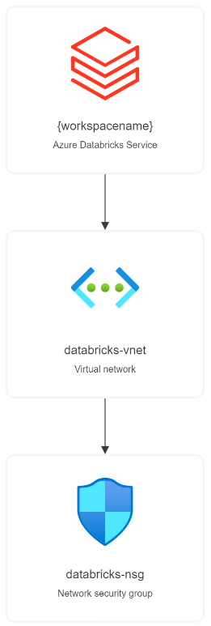

This template allows you to create a network security group, a virtual network and an Azure Databricks workspace with the virtual network. For more information, see the Azure Databricks Documentation.
Azure Databricks is an Apache Spark-based analytics platform optimized for the Microsoft Azure cloud services platform. Designed with the founders of Apache Spark, Databricks is integrated with Azure to provide one-click setup, streamlined workflows, and an interactive workspace that enables collaboration between data scientists, data engineers, and business analysts.
Azure Databricks is a fast, easy, and collaborative Apache Spark-based analytics service. For a big data pipeline, the data (raw or structured) is ingested into Azure through Azure Data Factory in batches, or streamed near real-time using Kafka, Event Hub, or IoT Hub. This data lands in a data lake for long term persisted storage, in Azure Blob Storage or Azure Data Lake Storage. As part of your analytics workflow, use Azure Databricks to read data from multiple data sources such as Azure Blob Storage, Azure Data Lake Storage, Azure Cosmos DB, or Azure SQL Data Warehouse and turn it into breakthrough insights using Spark.
This template allows you to install the following options
DataBricks 14 day trial DataBricks Standard DataBricks Premium
Getting Started with DataBricks Data Bricks Admin Guide